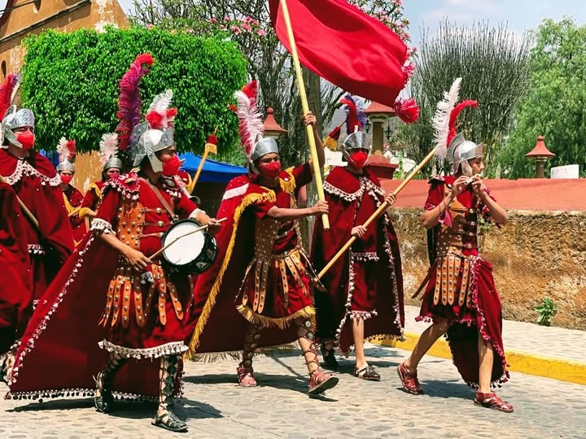

Son las 6 de la mañana del Viernes Santo. Malinalco está en silencio. Pero no por mucho tiempo.
Primero escuchas los tambores. Después los clarines. Luego el sonido de cascos sobre el empedrado — cientos de ellos — y el murmullo de una multitud que se despierta porque sabe lo que viene. Por las calles del pueblo avanzan hombres vestidos de terciopelo rojo y morado, con cascos de hojalata y armaduras de cuero, portando lanzas y banderas, montando a caballo o marchando a pie al ritmo de la música.
La Judea de Malinalco ha comenzado.
¿Qué es La Judea exactamente?
La Judea es la representación de la Pasión, muerte y resurrección de Jesucristo que Malinalco realiza durante Semana Santa. No es una obra de teatro con actores contratados. Es una expresión de devoción popular donde cientos de habitantes del pueblo — niños, jóvenes, adultos y ancianos — se caracterizan como los ejércitos romanos y participan de forma voluntaria, movidos por la fe y por la identidad de generaciones.
La participación en La Judea se transmite como herencia familiar. Hay hombres en Malinalco que llevan décadas participando — desde que sus padres los llevaron de niños hasta que hoy llevan a sus propios hijos. Las mujeres, aunque la participación directa en los ejércitos está reservada a varones, también son parte fundamental: confeccionan los trajes de sus familiares, a veces durante semanas, con terciopelo bordado y adornos metálicos que brillan bajo el sol de abril.
Por qué La Judea de Malinalco es única en México
Hay representaciones de la Pasión de Cristo en decenas de pueblos y ciudades de México. Iztapalapa en la Ciudad de México, Taxco en Guerrero, varias en San Luis Potosí. Cada una tiene sus propios elementos que la hacen especial.
Pero La Judea de Malinalco tiene algo que ninguna otra tiene documentado: la participación de caballos durante las procesiones. Según el director de turismo municipal, es la única representación en el país de la que existe registro documental con esta característica. Los ejércitos romanos no solo marchan a pie — también cabalgan. Y ese elemento visual — soldados con armaduras de cuero y cascos de hojalata sobre caballos, avanzando por calles empedradas del siglo XVI — es de una espectacularidad que los fotógrafos y viajeros de todo el mundo buscan específicamente.
200 años de historia: lo que se sabe y lo que no
La documentación oficial de La Judea de Malinalco existe desde 1943 — así lo registra el municipio. Pero la tradición oral habla de más de 200 años de historia continua. Esa brecha entre lo documentado y lo que la memoria colectiva preserva es característica de muchas tradiciones populares mexicanas.
Lo que sí está claro es la estructura que la Judea tiene hoy y que probablemente no ha cambiado en lo esencial desde sus primeras décadas: los barrios de Malinalco se organizan en ejércitos, los ejércitos recorren el pueblo buscando a Cristo, y la narrativa de la Pasión se desarrolla en las calles reales del pueblo durante una semana completa.

Las representaciones de la Pasión en México tienen origen en la evangelización colonial del siglo XVI. Los frailes franciscanos y agustinos usaron el teatro religioso para catequizar a las poblaciones indígenas. Malinalco, con su convento agustino construido en 1540, fue uno de los primeros pueblos en recibir esta tradición. Más de cuatro siglos después, La Judea sigue siendo la expresión más viva de ese encuentro cultural.
Las Cajas: cómo se organiza el ejército romano
La estructura de La Judea no es improvisada. Está organizada con una precisión que viene de generaciones. Los participantes se agrupan en lo que se llaman Cajas o legiones — cada una representando un barrio de Malinalco o la comunidad de Jalmolonga.
La dinámica central de La Judea es esta: los ejércitos romanos recorren el pueblo buscando a Cristo. Lo encuentran. Lo persiguen. Lo capturan. Lo juzgan. Lo crucifican. Y el Domingo de Resurrección, la narrativa culmina con el triunfo sobre la muerte. Una semana completa de teatro callejero en las calles reales de Malinalco.
El programa de Semana Santa en Malinalco
Cómo vivirla bien: guía práctica
- Llega el miércoles o antes. El Jueves y Viernes Santo el pueblo ya está lleno. Llegar antes te permite instalarte, orientarte y vivir la fiesta sin el estrés de llegar tarde.
- No trates de verlo todo desde un solo punto. La Judea se mueve por todo el pueblo. Camina con los ejércitos, sigue el recorrido, piérdete por los callejones del Barrio de San Martín.
- Respeta a los participantes. No son actores — son vecinos de Malinalco cumpliendo una promesa de devoción. El respeto que muestres como visitante define la calidad de tu experiencia.
- Visita el convento agustino durante la semana. Las misas y procesiones en el atrio del convento del siglo XVI tienen una solemnidad que la parroquia principal no puede replicar.
Cantera & Calma está en el Barrio de San Juan — en el corazón del recorrido de La Judea. Los ejércitos pasan por las calles del barrio durante toda la semana. Desde nuestras propiedades escuchas los tambores antes de ver a los soldados aparecer en la esquina.